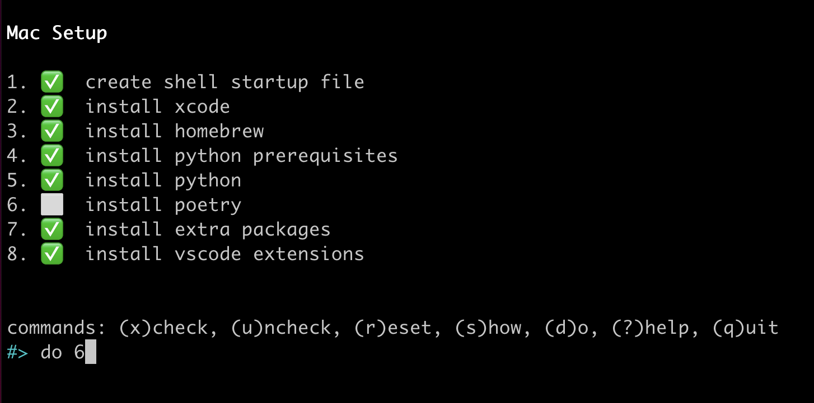

Mac Dev Env for Python
Contents
Mac Dev Env for Python#
Mac tool recommendations and setup guide for Python development.
Table of Contents
Quickstart#
The Python Class Setup tool will guide you step-by-step through the setup process.
[[ -d ~/.setup ]] || git clone https://github.com/alissa-huskey/python-class-setup.git ~/.setup
cd ~/.setup
./bin/setup-mac

Steps#
Step 1: XCode#
XCode is the Apple IDE (integrated development environment), a tool for writing code. It also contains the foundational tools and libraries that other programs rely on, and that programmers use when writing code.
Warning
This step will take awhile, so it’s a good idea to do this before bed or something.
Run the following command at the command line. Some GUI windows will pop up, prompting you to log into your apple account and accept the terms of service. After you follow the prompts, the download and installation will begin.
xcode-select --install
When it finishes run the following to accept the license.
sudo xcodebuild -runFirstLaunch
If installing from the command line does not work for some reason, you can install XCode via the Apple App Store.
Step 2: Find/create your startup file#
Tip
You can run the make-shellrc tool to find and generate a startup file for
you.
Copy the following and paste it into a terminal:
[[ -d ~/.setup ]] || git clone https://github.com/alissa-huskey/python-class-setup.git ~/.setup
cd ~/.setup
./bin/make-shellrc
Every time a terminal session starts, your shell reads from various files. One of those files is in your home directory and is where you will put configuration for things we’ll install in some of the following steps.
First you need to find out what your shell is by typing:
echo $SHELL
You will most likely see either /bin/zsh or /bin/bash.
Next we need to create your startup file if it does not already exist.
If your shell is
/bin/zsh, your startup file is~/.zshrc.If your shell is
/bin/bash, your startup file is~/.bash_profile.
[[ "${SHELL}" =~ zsh$ ]] && initfile=$HOME/.zshrc
[[ "${SHELL}" =~ bash$ ]] && initfile=$HOME/.bash_profile
touch "${initfile}"
In later steps when you see initfile, be sure to replace with the path to
your file.
Step 3: Homebrew#
Homebrew is a package manager for macOS. It simplifies the installing, upgrading and uninstalling of software, especially tools used by developers.
We’ll use this to install software in future steps.
/bin/bash -c "$(curl -fsSL https://raw.githubusercontent.com/Homebrew/install/master/install.sh)"
If you have an M1 chip, you will also need to add the following to your startup file.
PATH="/opt/homebrew/bin:$PATH"
export PATH
See the homebrew guide.
Step 4: asdf#
asdf is a command line tool that lets you easily install and switch between multiple versions of Python or other languages.
# install asdf
brew install asdf
Then you’ll need to add the following line to your startup file:
source "$(brew --prefix asdf)/libexec/asdf.sh"
See the asdf guide.
Step 5: Python#
This is for installing Python 3.8, but feel free to replace
3.8.11with any version inasdf list all python.
# install prerequisites
brew install zlib openssl readline xz bzip2 asdf
# install python
asdf install python 3.8.11
asdf global python 3.8.11
Step 6: Poetry#
Poetry is a tool that helps you make keep track of and install the dependencies needed for each project.
This step is optional.
To install poetry run the following:
curl -sSL https://install.python-poetry.org | python3 -
Then add to your startup file:
PATH="$HOME/.poetry/bin:$PATH"
export PATH
See the full Poetry Guide.
Step 7: VS Code#
Install Visual Studio Code via homebrew:
brew install --cask visual-studio-code
Or you can download the package from the Visual Studio Code website.
See the VS Code Intro.
Step 8: VS Code extensions#
You can install the recommended extensions via the PythonClass extension.
code --install-extension alissahuskey.vscode-python-class
Troubleshooting#
This section is for various issues installing Python on macs.
Issue A: arm64-apple not recognized#
The install fails before building with the error
Invalid configuration arm64-apple-darwin21.3.0: machine arm64-apple not recognized
Error
BUILD FAILED (OS X 12.2.1 using python-build 2.2.4-1-6-g44db3b03)
Inspect or clean up the working tree at /var/folders/jg/spf3ymn14710q5h5bl7p3wlw0000gn/T/python-build.20220304160204.18295
Results logged to /var/folders/jg/spf3ymn14710q5h5bl7p3wlw0000gn/T/python-build.20220304160204.18295.log
Last 10 log lines:
/var/folders/jg/spf3ymn14710q5h5bl7p3wlw0000gn/T/python-build.20220304160204.18295 ~
/var/folders/jg/spf3ymn14710q5h5bl7p3wlw0000gn/T/python-build.20220304160204.18295/Python-3.8.11 /var/folders/jg/spf3ymn14710q5h5bl7p3wlw0000gn/T/python-build.20220304160204.18295 ~
checking build system type... Invalid configuration `arm64-apple-darwin21.3.0': machine `arm64-apple' not recognized
configure: error: /bin/sh ./config.sub arm64-apple-darwin21.3.0 failed
make: *** No targets specified and no makefile found. Stop.
Solution
This happens on macs with the M1 chip when the the GNU version of uname
(from the coreutils homebrew package) is installed.
There is a patch for this that can be applied on install.
Apply the patch by setting the ASDF_PYTHON_PATCH_URL environment variable.
export ASDF_PYTHON_PATCH_URL="https://gist.githubusercontent.com/xight/74f84b8bde9ac6f539c3db20c2897d46/raw/cf2fd7ff5572afafb54d062f866e40d5e65cab43/config-sub.patch"
asdf install python 3.8.11
Apply the patch using the –patch flag.
pyenv install --patch 3.8.11 < \
<(curl -sSL https://gist.githubusercontent.com/xight/74f84b8bde9ac6f539c3db20c2897d46/raw/cf2fd7ff5572afafb54d062f866e40d5e65cab43/config-sub.patch)
See also
Issue B: Unexpected output of ‘arch’ on OSX#
The install fails before building with the error
Unexpected output of 'arch' on OSX
See also
Solution
This happens on macs with the M1 chip if it is not supported for that particular version.
There may be a patch available here depending on your version.
See also
Issue C: sendfile, zipimport, bzip, _lzma errors#
The install fails when building with one of the following errors:
implicit declaration of function 'sendfile' is invalid in C99
zipimport.ZipImportError: can't decompress data; zlib not available
The Python bz2 extension was not compiled. Missing the bzip2 lib?
No module named ‘_lzma’
Solution
These errors happen either because some dependencies are not installed, the dependency that is installed is broken in some way, or the python build cannot find them.
First, install or reinstall all dependencies.
for pkg in zlib openssl readline xz bzip2; do
brew uninstall $pkg 2> /dev/null
brew install $pkg
done
Then use this script to generate a .flags file. This contains shell commands
to set the CFLAGS and LDFLAGS environment variables so that they contain
the paths to the locations of all dependencies on your system.
curl -sSl https://raw.githubusercontent.com/alissa-huskey/python-class-setup/main/bin/flags.sh | bash
Apply the envionment varibles to your current terminal session by sourcing the
file, then install Python the way you normally would. After you’re done, you
can remove the .flags file if you want.
source .flags
asdf install python VERSION && rm .flags
Issue D: BUILD FAILED#
The install fails before building with an error that looks like the following with no other useful error messages.
BUILD FAILED (OS X XX.X using python-build XXXXXXXX)
Solution
This happens on macOS 11+ because the configure script searches for a release
version (from uname -r) of 1*.* and as of macOS 11 the release version is
2*.*.
There is a patch for this that can be applied on install.
Apply the patch by setting the ASDF_PYTHON_PATCH_URL environment variable.
export ASDF_PYTHON_PATCH_URL="https://github.com/python/cpython/commit/8ea6353.patch?full_index=1"
asdf install python 3.8.11
Apply the patch using the –patch flag.
pyenv install --patch 3.8.11 < \
<(curl -sSL https://github.com/python/cpython/commit/8ea6353.patch?full_index=1)
See also